WiRoc
Trådlösa mellantider med LoRa
WiRoc
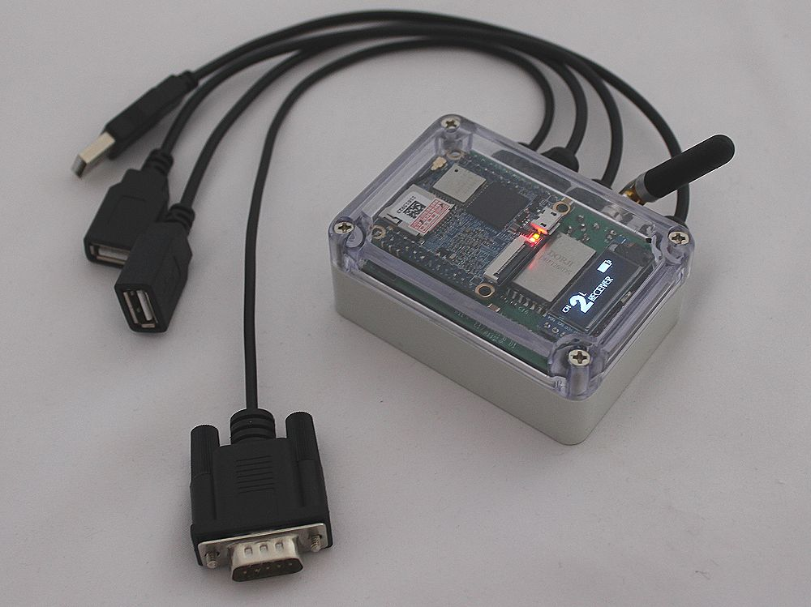
WiRoc är ett system för att trådlöst skicka mellantider från kontroller till tävlingsprogrammet. Den anväder sig av LoRa-tekniken. En WiRoc enhet kan agera Lora-sändare, Lora-mottagare eller Lora-repeater. Mottagaren kopplas upp på nätverket (vanligtvis med Wifi) och konfigureras till att skicka mellantider till tävlingsprogrammet via SIRAP/tcp. Systemet kräver inte mobiltäckning, sim-kort eller anslutning till internet. Anslutning till internet ger dock större möjligheter att övervarak enheterna. Enheterna är små och uppladdningsbara batterier ingår, bara att ansluta till USB port för att ladda.
Konfigurationen är enkel och görs med mobilapplikationen WiRoc-Config. WiRoc-Config används också för att testa att sändaren når mottagaren.
WiRoc enheten kan också användas för målenheterna. Ligger mållinjen inom räckhåll för Wifi så kan en WiRoc enhet skicka måltiden direkt via SIRAP/tcp till tävlingsprogrammet så att tiderna kommer upp blixtsnabbt i speakerstödet. WiRoc har inbyggd SRR mottagare. Samma enhet kan också samtidigt ta emot mellantider från skogen.
WiRoc kan även användas tillsammans med den officeella ROC-servern. När funktionen är aktiverad skickas inkommande stämplingar automatiskt vidare till ROC-servern, precis som en vanlig ROC-enhet. Både Lora, SIRAP och ROC kan användas samtidigt.
WiRoc enhet
90 kr/dag inkl. moms (72 kr exkl. moms)Det vanligaste scenariot för en radiokontroll i skogen är att använda en WiRoc enhet konfigurerad som sändare på eller i närheten av kontrollen och en WiRoc enhet konfigurerad som mottagare vid TC. Mottagaren kopplas upp på det lokala WLAN/Wifi nätverket och konfigureras att skicka till tävlingsprogrammet över SIRAP/tcp. SportIdent enheten kan kopplas till WiRoc sändaren på några olika sätt beroende på vilken typ av SportIdent enhet det är.
SportIdent enhet med USB kabel
Om SportIdent enheten har USB sladd kan den kopplas direkt till WiRoc enheten (ev. med en USB-förlängningsladd och/eller USB-hub). Ett annat alternativ är att koppla SportIdent enheten till en USB-till-Bluetooth adapter. I WiRoc-Config kan man sedan söka upp och ansluta USB-till-Bluetooth adaptern.SportIdent enhet med RS232 seriell kabel
Om SportIdent enheten har en RS232 seriell kabel så kan den kopplas via USB-adapter (notera att inte alla adaptrar stöds). Det finns även RS232-till-Bluetooth adaptrar att koppla SportIdent enheten till. I WiRoc-Config kan man sedan söka upp och ansluta RS232-till-Bluetooth adaptern. Vissa WiRoc enheter har en inbyggd RS232 port så att det går att koppla in direkt.SportIdent SRR enhet
För att använda en SportIdent SRR enhet behöver man använda en SRR USB Dongle som kopplas in i WiRoc enheten.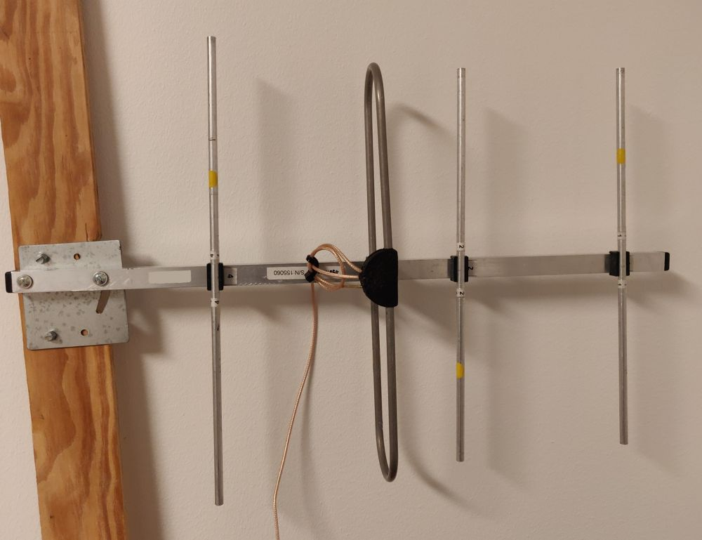
Yagi riktantenn
50 kr/dag inkl. moms (40 kr exkl. moms)En riktantenn kopplad till antingen mottagaren eller sändaren alternativt båda två förbättrar räckvidden avsevärt.
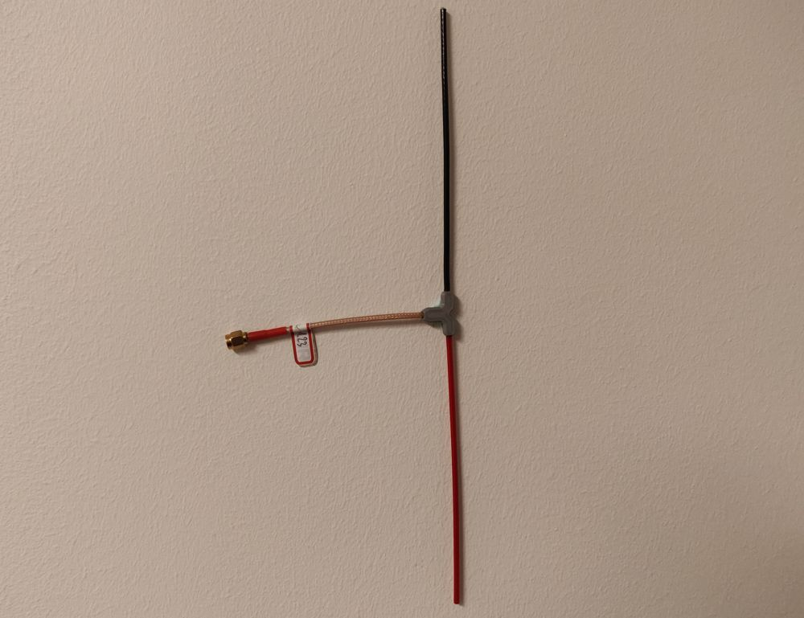
Dipolantenn
30 kr/dag inkl. moms (24 kr exkl. moms)Observera att en dipolantenn ingår vid hyra av en WiRoc enhet (om ingen riktantenn hyres).
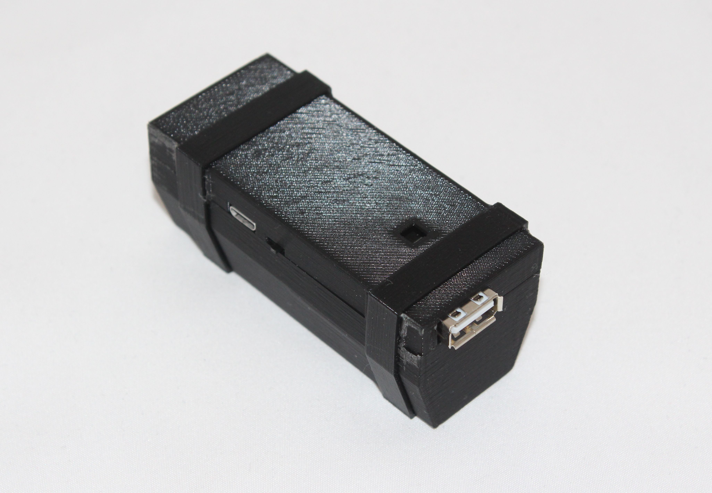
USB-till-Bluetooth adapter
50 kr/dag inkl. moms (40 kr exkl. moms)Används för att trådlöst koppla en SportIdent enhet med USB-kabel till en WiRoc enhet. Detta gör det enklare att placera WiRoc enheten med antenn högre upp t.ex i ett träd.
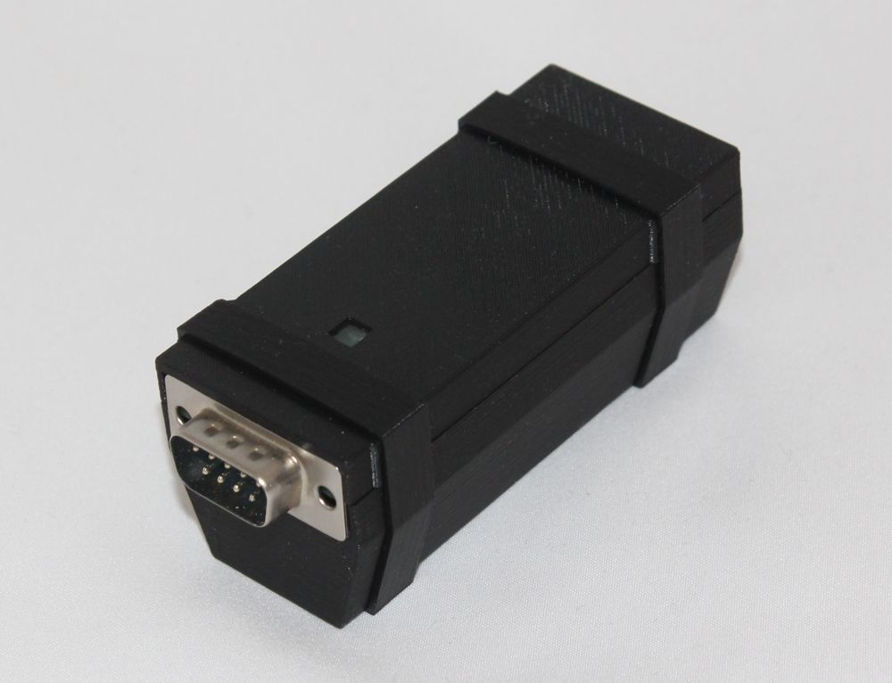
RS232-till-Bluetooth adapter
50 kr/dag inkl. moms (40 kr exkl. moms)Används för att trådlöst koppla en SportIdent enhet med RS232 seriell kabel till en WiRoc enhet. Detta gör det enklare att placera WiRoc enheten med antenn högre upp t.ex i ett träd.
Räckvidd
Räckvidden beror på många faktorer där de främsta är terrängen, vilka antenner som används och datahastigheten. Se några verkliga exempel från tävlingar längre ner.Antenner
Vilken antenn som används på sändare respektive mottagare har stor betydelse för räckvidden.Dipolantenn
Liten dipolantenn som ansluts direkt till WiRoc-enheten. Storlek ca 10x30 cm.
Riktantenn
Riktantenn ger bättre räckvidd, denna är ca 45x30 cm.
Exempel
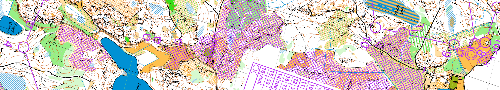
Lång DM Östergötland 2023
Avståndet mellan kontroll 4 och mål är 3150 m. Här användes en yagi riktantenn vid både sändaren och mottagaren. Inställning för extra lång räckvidd (XL), datahastighet 134 bps.
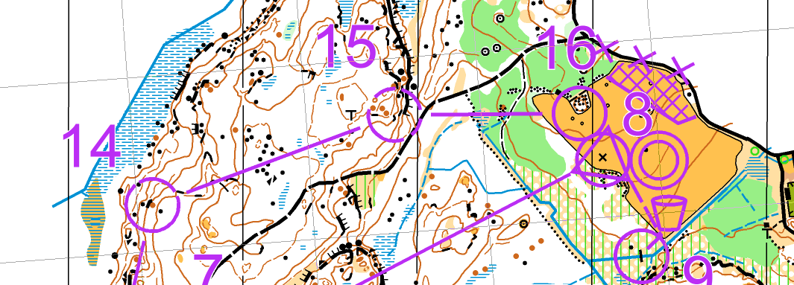
Lång DM Östergötland 2023
Avståndet mellan kontroll 14 och mål är 700 m. Här användes en dipolantenn vid både sändaren och mottagaren. Inställning för lång räckvidd (L) (standardinställningen), datahastighet 244 bps.
Äldre exempel
Nedanstående exempel är med en tidigare version av WiRoc. Nuvarande räckvidd bör dock vara minst lika bra.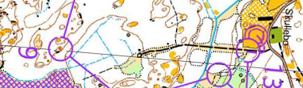
Skullebomedeln
Avståndet mellan kontroll 9 och mål är 600 m. Här användes en liten dipolantenn vid både sändaren och mottagaren. Inställning för låg datahastighet/lång räckvidd.
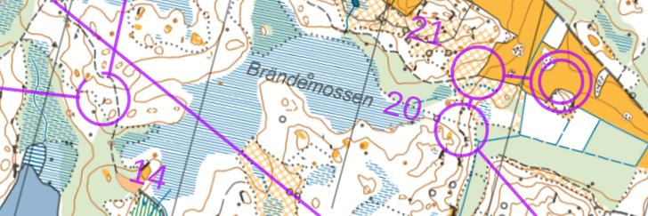
Lång DM
Avståndet mellan kontroll 14 och mål är 760 m. Här användes en liten dipolantenn vid sändaren och mottagaren använde en riktantenn. Inställning för låg datahastighet/lång räckvidd. Hade troligen fungerat även med dipolantenn vid mottagaren.
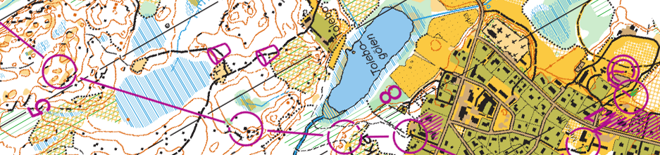
Ulrikadubbeln
Avståndet mellan kontroll 5 till mål är 1,5 km, kontrollen ligger på höjd med nära fri sikt till målet. Här användes en liten dipolantenn på sändaren och riktantenn på mottagaren. Hade troligen fungerat även med dipolantenn vid mottagaren.
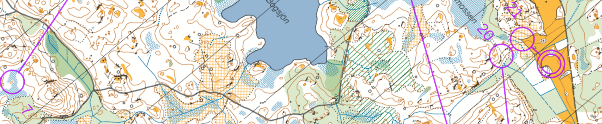
Lång DM
Avståndet mellan kontroll 7 till mål är 1,8 km med flera mindre höjder emellan. Här användes riktantenner på både sändaren och mottagaren. Inställning för låg datahastighet/lång räckvidd.
Konfiguration
WiRoc-enheterna konfigureras med Android-applikationen "WiRoc Config".Scan
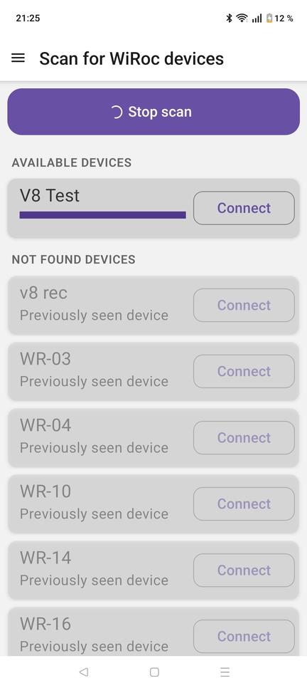
Sök efter enheter
Starta WiRoc enheten och klicka på Scan i appen. När enheten har startat upp dyker den upp i listan. Default-namnet är "WiRoc Device" men rekommenderas att byta namn för att kunna skilja dem åt. Finns flera med samma namn kan man skilja dem åt på signalstyrkan – den med högst signalstyrka är närmast.
Config
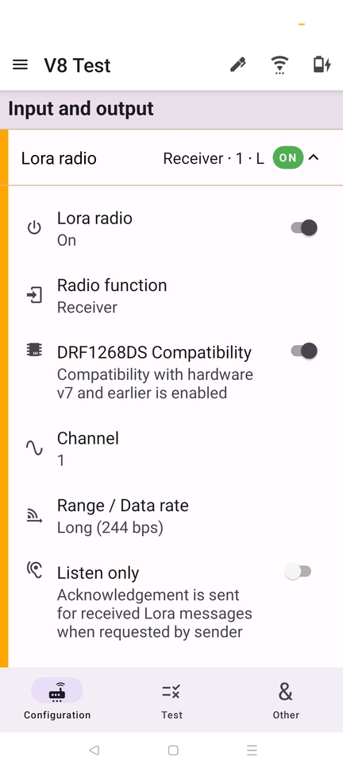
LoRa – Kanal / hastighet
Välj funktion, kanal, datahastighet mm för LoRa-radion. Sätt samma på både sändare och mottagare. Lägsta datahastigheten ger längst räckvidd men färre stämplingar per minut. Andra faktorer har dock större inverkan på räckvidden så de två lägsta datahastigheterna rekommenderas inte annat än i specifika fall. Här väljs också uteffekt och kompatibilitets läget för DRF1268DS (WiRoc v7 och tidigare) ska användas. Vilka kanaler som finns att välja på om kompatibilitetsläge är aktiverat och om amatörradioläget är aktiverat.
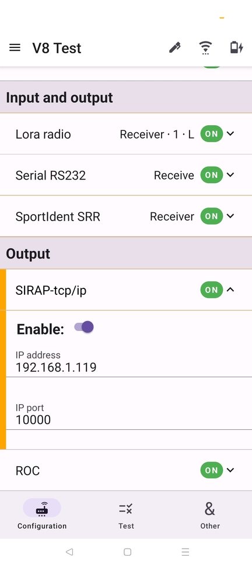
SIRAP
Ställ in IP-adress och port dit stämplingar ska skickas via SIRAP TCP/IP. För Meos är standardporten 10000, för OLA 10001 (endast testat med dessa program). Oavsett vilken Lora funktion som WiRoc enheten har så kan SIRAP TCP/IP aktiveras.
ROC
Här kan du konfigurera enheten att skicka stämplingar till den officella ROC-servern. När funktionen är aktiverad skickas inkommande stämplingar automatiskt vidare till ROC-servern, precis som en vanlig ROC-enhet.
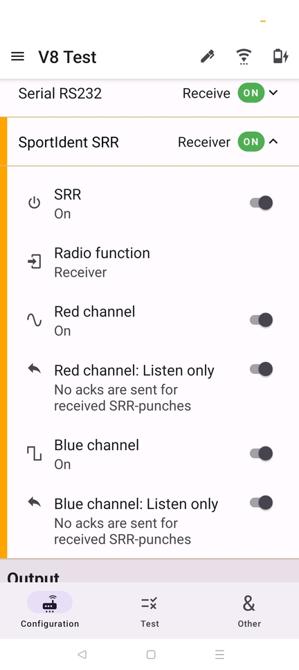
SRR
Inställningar för inbyggda SRR-mottagare. Här kan du aktivera/inaktivera SRR-mottagare för röd och blå kanal, samt välja om de ska skicka ack (bekräftelse) tillbaka till SIAC/SRR-enheterna. Det går också att sätta SRR i sänd läge så att den skickar ut stämplingar som kan tas emot av annan WiRoc eller av en SRR-dongel.
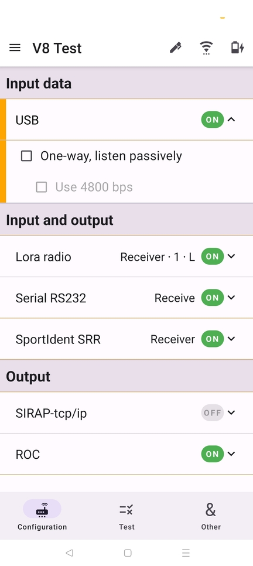
USB
Hantera anslutna USB-enheter som SI-masterstationer eller SRR-donglar. Här kan du aktivera "One-way" kommunikation (endast lyssna, skickar inga kommandon) för USB-portarna. Användbart för SRR-donglar eller samlingsboxar som inte ska ta emot kommandon från WiRoc.
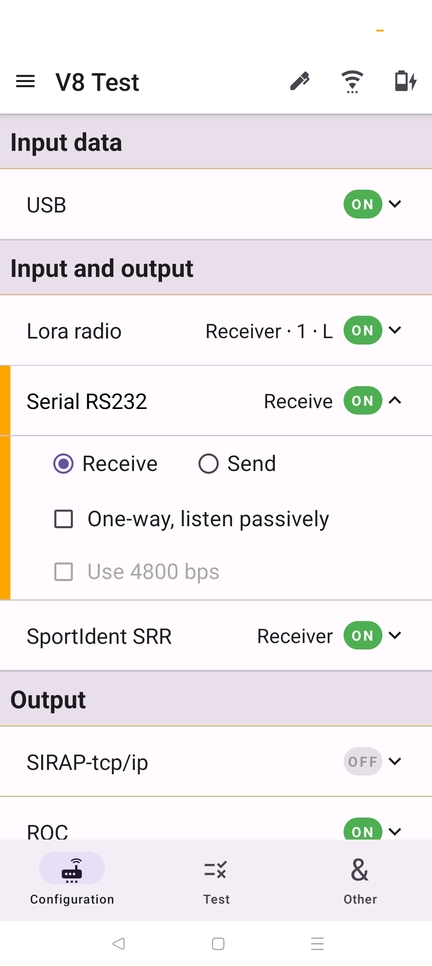
Serieport
Inställningar för den inbyggda serieporten. Här kan du aktivera "One-way" kommunikation (endast lyssna, skickar inga kommandon) för kommunikation med SI-enheter eller samlingsboxar anslutna via seriekabel. Serieporten kan även användas för att skicka ut data till dator, annan WiRoc eller samlingsbox.
Nätverk
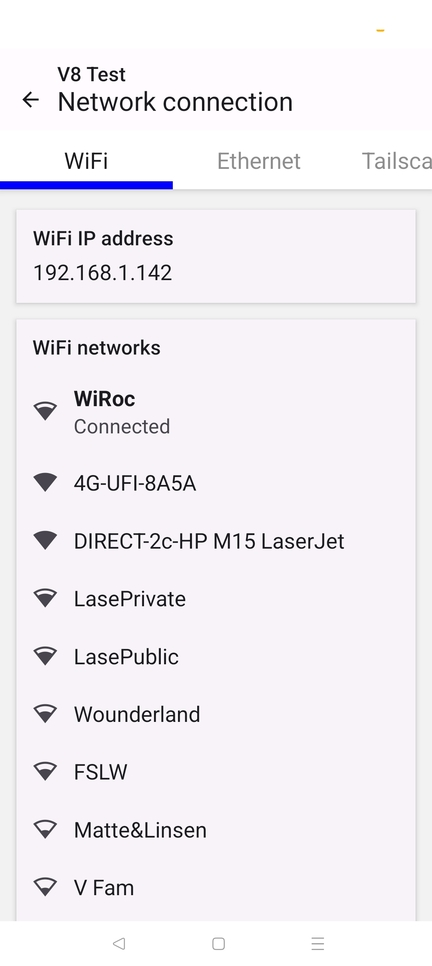
WiFi
Anslut WiRoc-enheten till ett WiFi-nätverk. Klicka på "Get/Refresh wifi list" för att se tillgängliga nätverk. Välj nätverk och ange lösenord för att ansluta. Mottagarenheten måste vara ansluten till nätverket för att kunna skicka stämplingar via SIRAP. Enhetens IP-adress visas längst upp när den är ansluten.
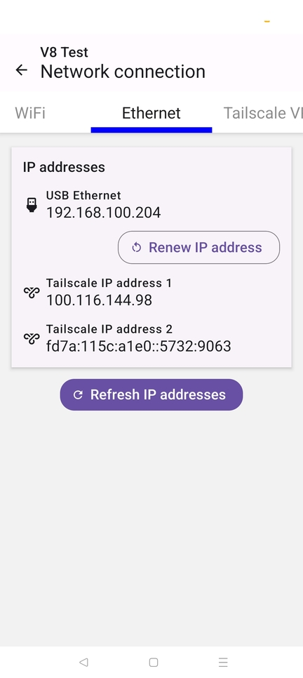
Ethernet
Här kan du se ip-adressen för Ethernet-anslutningar (exempelvis USB-Ethernet-adapter) och Tailscale VPN IP.

Tailscale VPN
Anslut WiRoc-enheten till ett Tailscale-nätverk. Med Tailscale kan du nå enheten från var som helst, även bakom brandväggar. Enheten får en fast IP-adress (100.x.x.x) i Tailscale-nätverket. Användbart för fjärrövervakning, felsökning eller för att skicka stämplingar till en dator på annan plats. Kräver ett gratiskonto på tailscale.com.
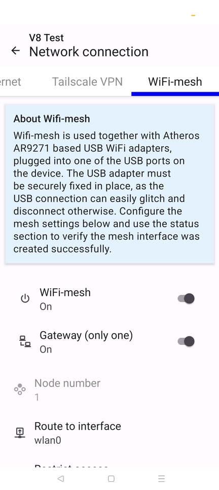
WiFi Mesh
Konfigurera WiFi-mesh-nätverk (802.11s) för att utöka räckvidden på WiFi-nätverket. Användbart när en kontroll ligger utanför vanlig WiFi-räckvidd. Kräver en kompatibel USB-WiFi-dongel (t.ex. Atheros AR9271). Här kan du även ställa in begränsad åtkomst till det lokala nätverket och ange specifika regler för tillåten trafik.
Test
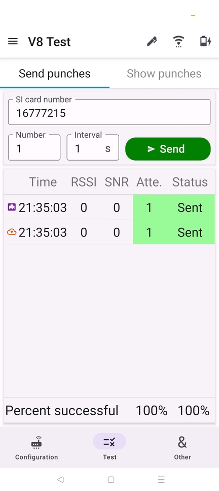
Testa sändning
Skicka testmeddelanden för att verifiera att Lora länken mellan sändare och mottagare fungerar. Här kan du se signalstyrka (RSSI och SNR) och vilka meddelanen bekräftats tillbaka. Användbart vid uppsättning för att kontrollera att placering och antennriktning är bra. Kan även användas för att skicka via SIRAP TCP/IP, ROC och de andra utdatametoderna. Skärmbilden visar en stämpling som skickats till SIRAP och till ROC
Övrigt
Databas
Hantera enhetens interna databas med stämplingar och konfiguration. Databasen kan rensas från stämplingar eller så kan den helt skapas om (förlorar då både inställningar och stämplingar).
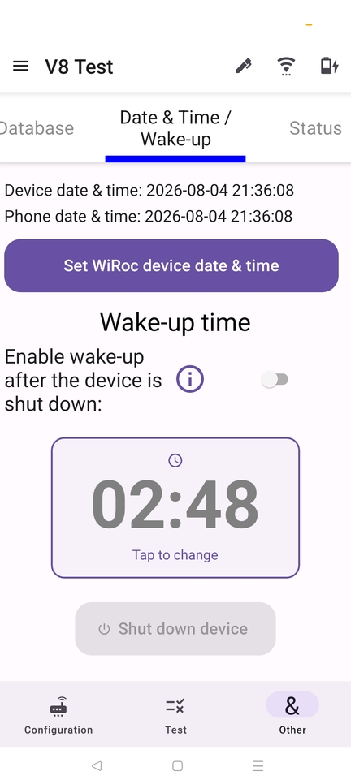
Datum & Tid
Ställ in datum och tid på enheten. Korrekt tid är viktigt för att loggarna ska få rätt tidsstämpel, och för att stämplingar som skickas till ROC servern ska få rätt datum. Enheten synkar normalt tiden automatiskt när den har internetuppkoppling och WiRoc V7 och senare har RTC-chip som håller tiden även när enheten är avstängd.
Status
Visar enhetens aktuella status, om tjänsterna körs som de ska, vilka indata/utdata som är aktiva mm.
Inställningar
Här kan man ändra alla inställningar, inklusive avancerade som det inte finns något användargränssnitt för.
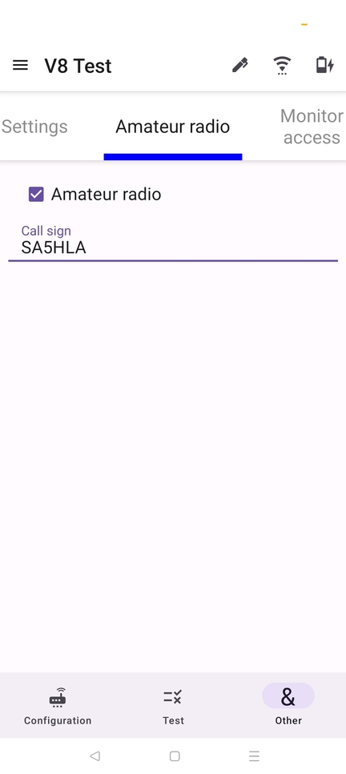
Amatörradio
Inställningar för amatörradioläget. Här anges om läget ska aktiveras och vilken anropssignal som ska användas för amatörradiofrekvenser. Anropssignalen skickas med regelbundet som en del av radiosändningarna enligt gällande regler.
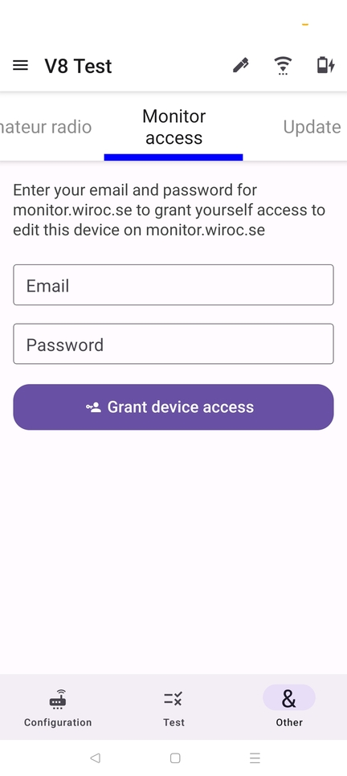
Monitor-åtkomst
Här ger du ett användarnamn åtkomst till WiRoc enheten på monitor.wiroc.se så att användaren kan tilldela eneheten till en tävling, rensa statistik mm.
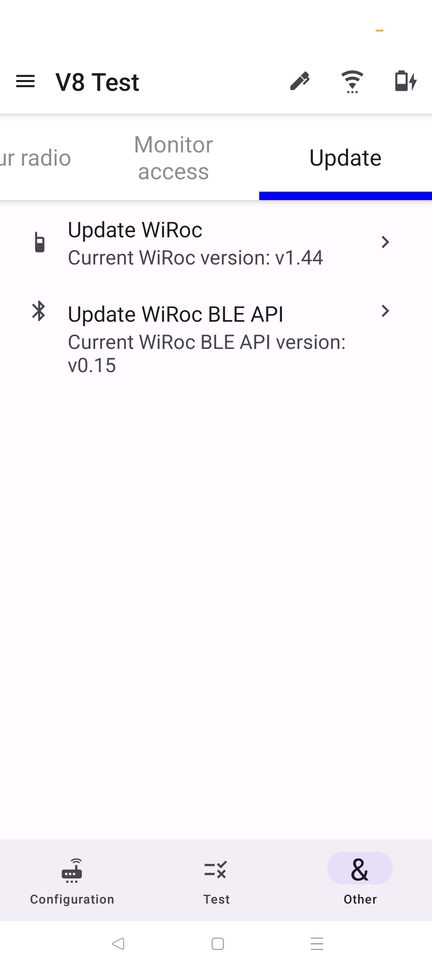
Uppdatering
Uppdatera enhetens mjukvara till senaste versionen. Enheten söker efter tillgängliga uppdateringar och du kan välja att installera dem direkt. Håll mjukvaran uppdaterad för att få de senaste funktionerna och buggfixarna.
Blog
Skicka stämplingar till ROC-servern
2026-08-04
WiRoc kan nu skicka stämplingar direkt till en ROC-server. Tidigare har WiRoc kunnat erbjuda ett ROC-kompatibelt API varifrån man kan hämta stämplingar istället för ifrån den officiella ROC-servern. Med den nya funktionen kan WiRoc istället aktivt skicka (pusha) stämplingar till den officella ROC-server, på samma sätt som en vanlig ROC-enhet gör.
Funktionen innebär att WiRoc integreras sömlöst i ett befintligt ROC-system. För att kunna skicka stämplingar behöver WiRoc-enheten ha internetuppkoppling (via Wifi, USB-ethernet, Wifi-mesh). Funktionen kan användas på WiRoc-enheter som är konfigurerade som Lora-sändare, Lora-mottagare eller som Lora-repeater. De olika utdata alternativen kan användas parallellt, så att stämplingar kan skickas både via Lora, SIRAP/tcp och till ROC-servern samtidigt. Exempelvis kan en WiRoc-enhet som är konfigurerad som mottagare skicka stämplingar både via SIRAP/tcp till tävlingsprogrammet och samtidigt skicka dem till ROC-servern.
I ROC-serverns gränssnitt ser det ut som att stämplingarna kommer från vilken ROC-enhet som helst.Detta gör det möjligt att använda WiRoc som ett komplement till ROC i samma tävling. Till exempel kan ROC användas vid kontroller nära arenan där WiFi eller mobiltäckning finns, medan WiRoc används vid kontroller längre ut i skogen där LoRa-kommunikation är mer tillförlitligt.
Funktionen finns tillgänglig från WiRoc mjukvaruversion v1.45.
WiFi-mesh – Begränsa åtkomst till lokala nätverket
2026-08-03
WiFi-mesh funktionen i WiRoc har fått en ny inställning: Begränsa åtkomst (Restrict access). När denna är aktiverad så kan enheter på mesh-nätverket inte nå ut till det lokala nätverket (LAN) som mesh-noderna är anslutna till. Detta ger bättre kontroll över vad som är tillgängligt från mesh-nätverket.
Funktionen är användbar i situationer där man vill begränsa vad enheter på mesh-nätverket kan komma åt. Till exempel kan man undvika att mesh-noder av misstag får tillgång till känsliga resurser på det lokala nätverket.
När Begränsa åtkomst är aktiverat kan mesh-enheterna fortfarande kommunicera med varandra inom mesh-nätverket och med WiRoc-enheternas egna tjänster. Trafik till internet släpps alltid igenom.
För att tillåta specifik trafik från mesh-nätverket till det lokala nätverket går det att ange destinationens IP-adress, port och protokoll. På så sätt kan man till exempel tillåta att stämplingar skickas via TCP/SIRAP till en mottagardator på det lokala nätverket, samtidigt som övrig åtkomst till LAN:et är blockerad. Flera sådana regler kan läggas till.
Inställningen görs i WiRoc Config-appen under WiFi-mesh fliken och finns tillgänglig från mjukvaruversion v1.44.
Tailscale VPN i WiRoc
2026-08-03
WiRoc har nu stöd för Tailscale VPN. Tailscale är en VPN-tjänst byggd på WireGuard som gör det enkelt att skapa ett säkert nätverk mellan olika enheter, oavsett var de befinner sig eller hur de är anslutna till internet.
Med Tailscale aktiverat på en WiRoc-enhet som har internetuppkoppling (t.ex. via WiFi, ethernet eller mobil USB-sticka) kan enheten nås från andra enheter som också är anslutna till samma Tailscale-nätverk. Det betyder att du till exempel kan nå en WiRoc-enhet ute i skogen från din dator hemma, eller från en annan WiRoc-enhet på en annan plats. All kommunikation är krypterad och går direkt mellan enheterna när det är möjligt, utan att passera en central server.
Några användningsområden:
- Felsökning och övervakning
- Skicka stämplingar via SIRAP/ROC till en dator som inte är på samma lokala nätverk
Tailscale stöds från WiRoc mjukvaruversion v1.43 och konfigureras enkelt i WiRoc Config-appen. För att komma igång skapar du ett konto på tailscale.com och anväder sedan WiRoc Config appen för att ansluta enheten till ditt Tailnet. Nedan visas konfigurationsskärmarna:
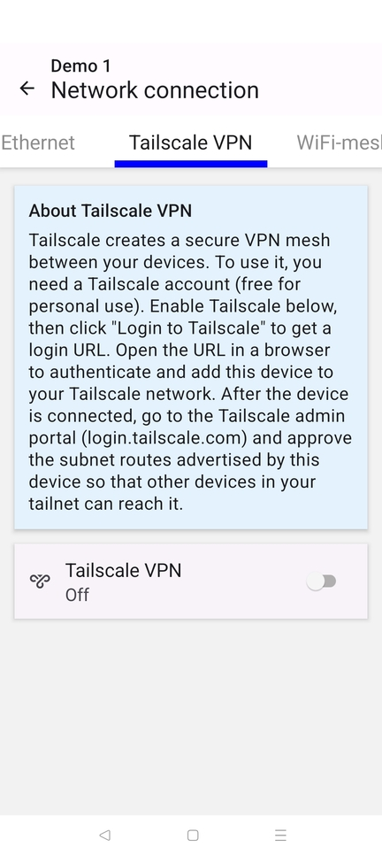
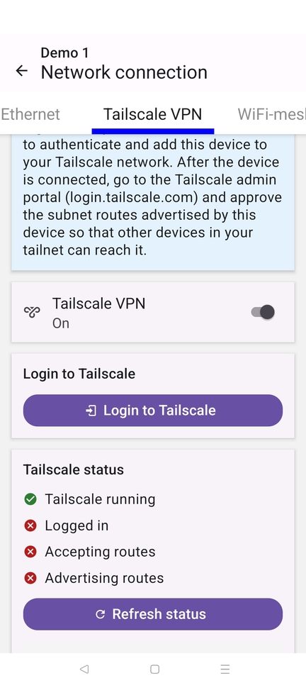
När Tailscale är aktiverat får WiRoc-enheten en stabil IP-adress i Tailscale-nätverket (100.x.x.x) som alltid är densamma oavsett var enheten ansluter till internet. Det gör det betydligt enklare att nå enheter som annars ligger bakom brandväggar eller saknar publik IP-adress.
ROC-kompatibelt API för stämplingshämtning
2026-08-02
Nu finns ett nytt ROC-kompatibelt API i WiRoc. Det gör det möjligt att från tävlingsprogrammet ansluta och hämta stämplingar direkt från en WiRoc-enhet via ROC-protokollet. Adressen är http://<wiroc-ip>:5000/api/roc. Parametern "unitid" ignoreras av WiRoc så den kan sättas till exempelvis 1.
API:et stöder long polling vilket innebär att inkommande stämplingar levereras snabbt. Sätt ett kort polling-intervall, till exempel 100 ms. Om det inte finns någon stämpling att hämta kommer WiRoc att blockera i upp till 30 sekunder, och sedan returnera en stämpling direkt när en sådan anländer.
Du kan polla från vilken WiRoc-enhet som helst som du kan nå över nätverket. Detta är troligen mest användbart som ett alternativ till TCP/IP SIRAP. Båda metoderna kan användas parallellt. En fördel med ROC-protokollet är att du kan välja att hämta alla stämplingar (med start från ett specifikt stämplings-id).
WiRoc V8 – ny hårdvara och förbättrad LoRa-kommunikation
2026-07-12
Efter tester av den nya hårdvaran är nu version 8 av WiRoc redo att tas vidare. Den största förändringen är att vi går över till en egen SBC (Single Board Computer) istället för NanoPi Neo Air som använts tidigare.
Att ha en egen hårdvara ger betydligt större frihet i designen. Det blir enklare att anpassa kretskortet efter WiRocs behov och att göra framtida förbättringar utan att vara beroende av en färdig enkortsdator.
Den nya versionen har även nya moduler för WiFi, Bluetooth och LoRa.
Ny WiFi- och Bluetooth-modul
WiFi-modulen är uppdaterad och har nu stöd för 5 GHz WiFi. Det kan vara en fördel i miljöer där 2,4 GHz-bandet är belastat av många andra nätverk.
Även räckvidden på 2,4 GHz WiFi har förbättrats jämfört med tidigare versioner.
Ny LoRa-radio
Den största tekniska förändringen är den nya LoRa-modulen. Med den nya modulen får vi full kontroll över alla LoRa-inställningar, vilket öppnar flera möjligheter att optimera kommunikationen.
En förbättring är att vi kan minska storleken på meddelandena med ett par byte. Vi kan också skicka ACK (bekräftelser) snabbare tillbaka till sändaren. Det gör att vi kan öka antalet stämplingar per minut något utan att behöva öka datahastigheten.
Fler kanaler
Den nya LoRa-modulen gör det också möjligt att använda smalare kanaler. Det innebär att WiRoc V8 kan använda upp till 12 olika kanaler.
För att behålla kompatibiliteten med tidigare WiRoc-versioner finns de tidigare 6 kanalerna fortfarande kvar. Det går alltså att använda nya och äldre enheter tillsammans i samma system.
Räckviddstesterna visar att nya modulen ger samma eller kanske något bättre räckvidd än gamla. De smalare kanalerna fungerar också de minst lika bra som de gamla bredare.
Sammanfattning
WiRoc V8 är framförallt ett steg mot en mer flexibel hårdvaruplattform. Den nya SBC gör att vi kan fortsätta utveckla hårdvaran efter WiRocs behov och den nya LoRa-modulen ger bättre möjligheter att optimera radiokommunikationen.
Precis som tidigare version så finns det inbyggd SRR-mottagare för både Röd och Blå kanal (samtidigt). Två USB honkontakter där det går att koppla in ytterligare SRR-donglar, USB-ethernet adapter eller SI-stationer med USB-kabel. Det finns också en serieport där man koppla in masterstation med seriekontakt eller en samlingsbox. Serieporten kan även användas för att skicka ut data till samlingsbox eller dator.
Guest post: Wharfedale Three Peaks 2026
2026-07-02
Today we have a report from Ben in UK. Ben bought a number of WiRoc kits and assembled them, installed everything and got them working in short time!
Wharfedale Three Peaks 2026, Saturday 27th June
Pendle Forest Orienteers (PFO) ran the timing for the UWFRA Wharfedale Three Peaks this year, the Upper Wharfedale Fell Rescue Association's fundraising event on 27 June. Around 250 runners across two courses: the full 17 mile Three Peaks (W3P) over Great Whernside, Buckden Pike and Birks Fell, and the shorter Two Peaks (W2P), all run in glorious sunshine. We used WiRoc to bring checkpoint "punches" back to the event centre so the finish team and the organisers could see who was still out on the hill. On a fell race/walk that is as much a safety tool as a results one.
Six units in all, running WiRoc v1.13. R1 sat at the finish as the receiver, feeding SiTiming over SIRAP (more on that later), and also carried the finish control. Five senders (S1 to S5) covered the manned checkpoints: Great Whernside, Buckden Village, Buckden Pike, Park Rash and Birks Fell. LoRa carried the punches from the checkpoints back to base, and Great Whernside (S1), the high point, also ran as a repeater so that valley sites which could not reach the finish directly could route via the summit. Two controls, Starbotton and Cam Head, had no radio at all.
Afterwards we pulled the databases off all six units and compared every punch against the SiTiming card download, which is the definitive truth: a punch is physically on the runner's card whether or not any radio worked. So the delivery rate for a site is simply the fraction of the punches on cards there that also reached base over the network.
How it went:
The LoRa network as a whole delivered 791 of 901 punches from the five hill sites, so just under 88 percent. Per site it ranged widely:
{kind=link}
- Great Whernside (S1): 189 of 193, 98 percent
- Park Rash (S4): 185 of 196, 94 percent
- Birks Fell (S5): 146 of 158, 92 percent
- Buckden Pike (S3): 160 of 196, 82 percent
- Buckden Village (S2): 111 of 158, 70 percent
For a first outing of this network on real terrain, that is a decent result, but the spread is the interesting part, and digging into the two worst sites turned up two lessons that were the opposite of what we expected going in.
At Buckden Village (S2) the headline delivery there was our worst, 70 percent, so on the face of it the experiment looked like a failure.
Great Whernside was active as a repeater and, encouragingly, it carried the two weakest-delivery sites the most. It relayed 94 distinct cards from Buckden Pike (S3) and 83 from Buckden Village (S2), plus smaller numbers from Park Rash (S4), the finish and Birks Fell. So the adaptive routing did what it is supposed to: the valley sites that struggled to reach base directly leaned on the summit. Without it, S2 and S3 would have been worse still.
What actually caused the losses:
The single most important finding is that most of the losses were not really radio problems at all. They were R1.
The base unit (R1) froze and had to be restarted repeatedly through the morning: 21 power cycles, and more than two-thirds of its database rows carry the unset-clock date that a unit writes when it has just booted without time. When you plot LoRa losses by hour, they concentrate between 09:00 and 11:00, running at around 20 percent an hour, and then they fall away to essentially zero after 13:00. That is during the busiest time, when participants are bunched together. With thanks to Henrik, a field patch was applied, which stabilised performance.
That splits the losses into two mechanisms. Some punches were sent, got a single-hop acknowledgement, and the sender stopped retransmitting, but R1 was frozen at that moment so the base never actually stored them. Those are silent and unrecoverable. Others never got an acknowledgement at all, so the sender retried the full five times over about a minute into a receiver that was not listening, then gave up. Either way, link quality only decided how many punches were exposed to the problem. The R1 hangs turned exposure into loss.
SIRAP, and making sure punches stick:
Earlier I mentioned that R1 feeds SiTiming over SIRAP. SIRAP is unacknowledged: the WiRoc pushes a punch at the timing software, and there is no confirmation that it actually landed in the database. We were bitten by that before at the Compass Sport Final (2024), where punches arrived over the wire but never made it into the results. So this time I wrote a replay system alongside it. Every punch WiRoc had received was held and could be replayed into the timing software, so that anything which reached the event centre was checked against SiTiming and replayed if missed.
It is a belt and braces layer; WiRoc's job is to get the punch to base, and the replay's job is to ensure a punch that reached base is actually in the timing software.
What we would change:
The priority for next year is obvious: fix R1's stability so it is not freezing under early load, because a solid base station would have turned an 88 percent day into a very good one on the same radio links.
Buckden Village showed the 2.4 GHz SRR hop itself is fine, so the work there is on the LoRa path to base, most likely antenna height, position or repeater. And we would log RSSI next time. It was NULL throughout these databases, so we could not do any signal-strength fade analysis.
Overall, UWFRA were extremely happy with the data, having moved from a paper-based system, and they have already booked us for next year, where they want to add 2 more units... Henrik, I need more units :)
My sincere thanks to Henrik for his tireless support over these last few months whilst I worked on this somewhat accidental project. The WiRocs are meant for PFO use :)
I must say I am impressed with what Ben archived in such a short time. A little sad I couldn't provide a stable version without the freezing issue. It is a known issue that has been fixed or at least been much improved in later internal builds. The problem occurs when the links are marginal or there is some interferrense.
When I looked at the maps, distances (some above 6 km), topology, and Bens plans I didn't expect the Lora links to work as well as it apparantly did. There are some challenges with this setup in that the senders at the controls are so far apart that they can't hear each other. This increases the chances of them trying to send data at the same time. This was also the first test of the repeater functionality in many years (and versions).
Some things to consider for next year: Should all run on the same channel with a single receiver? The receiver is in a difficult location to reach from the controls and it is difficult to find a single repeater location that has good Lora link to all controls. So maybe using two or more channels with a repeater on each could help. Linking up two WiRoc to create a relay station could be an alternative to use the repeater functionality. I also would suggest directional antennas at some checkpoints.
Ben also sent some photos, two of which are shown below:
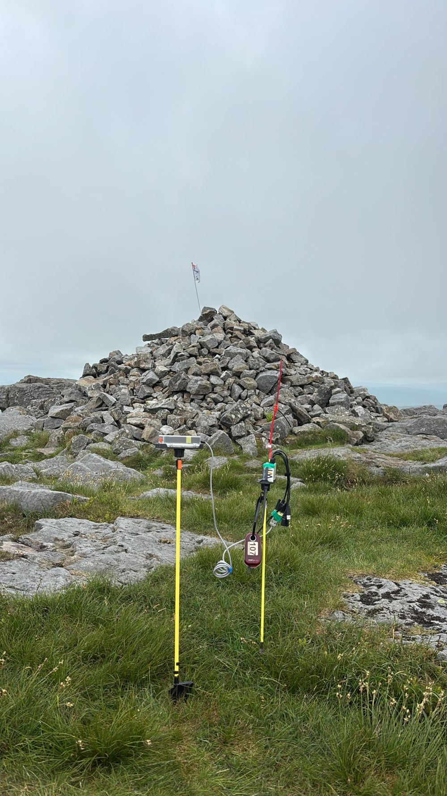
Ny hårdvara
2026-06-15
Nyligen testat nästa version av hårdvaran. Största ändringen på många år, instället för att bygga på en inköpt SBC (NanoPi Neo AIr) så är nu processor, minne och eMMC integrerat på kretskortet tillsammans med en ny LORA radiomodul. Fördelarna är framförallt mer flexibilitet och att inte längre vara beroende av tillgängligheten på NanoPi Neo Air. Den ny LORA radion ger fler möjligheter att anpassa exakt hur meddelanden skickas vilket gör att man kan kräma ut lite mer prestanda. Vi bör kunna öka antal stämplingar per sekund och även erbjuda fler kanaler. Och kanske fler saker i framtiden...
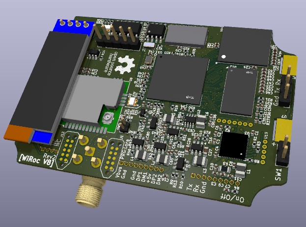
Ny rundstrålande antenn
2026-05-01
Har testat en ny rundstrålande antenn och kombinerat den med en krok i toppen och en hållare för WiRoc under. Det gör att man enkelt kan hänga den i en gren, i många fall rakt över kontrollen. De intiala testerna pekar på att den är lika bra eller kanske bättre än de riktantenner (Yagi) som jag använt tidigare. Lösningen har flera fördelar:
- Kan hängas upp enkelt, utan tejp eller spännband. Enkelt att få upp den högre.
Jämfört med yagi riktantenn:
- Smidigare att bära ut jämfört med riktantenner. Inga antennspröt som kan tappas bort. Kan enkelt bäras ihopsatt med WiRoc enheten.
- Behöver inte riktas in, ska bara hänga lodrätt
- Lika eller bättre prestanda
- Andra sändare runt om på samma kanal har bättre chans att uppfatta när den sänder
Jämfört med dipolantenn:
- Signifikant bättre prestanda
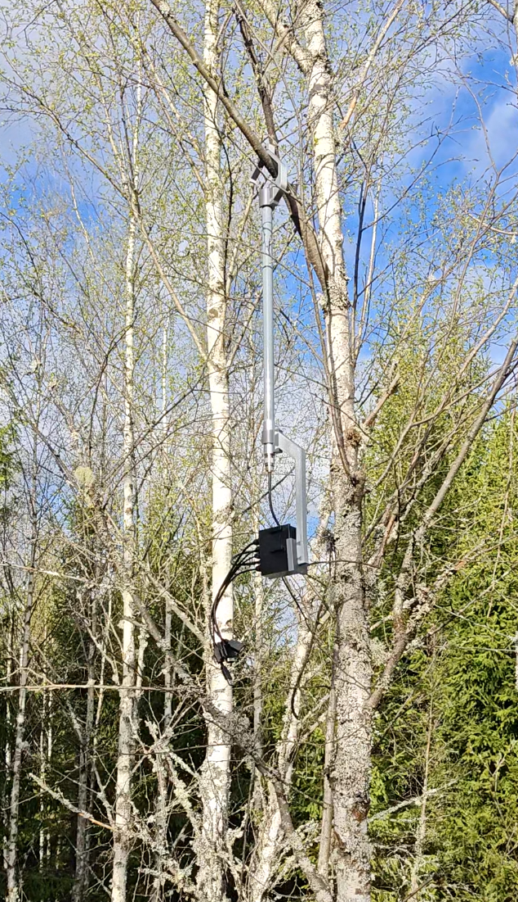
En annan idé... I de fall det inte finns möjlighet att hänga ovanför kontrollen så borde det gå att montera den under SI-enheten. Med lite andra fästen borde det fungera tillsammans med kontrollställningarna i glasfiber. SRR-mottagningen borde blir riktigt bra under enheten. Helt idealiskt är det ju inte med Lora-antennen så nära marken men i de flesta fall bör det fungera utmärkt ändå.
Wifi-mesh
2026-04-30
I helgen testades Wifi-mesh funktionaliteten på en dubbeltävling. Det fungerade utmärkt, det var stabilt och räckvidden var bättre än förväntat.
Under dag 1 så användes fyra mesh noder. Mesh-1 anslöt till Wifi-AP med inbyggda wifin. Noderna Mesh-1 till Mesh-4 skapade ett mesh nätverk på 2.4 Ghz wifi (802.11s) med hjälp av USB-Wifi donglar baserade på Atheros AR9271 chipsetet. Alla noderna höll sig online under hela tävlingen. Kontrollen satt vid Mesh-4. Mest troligt hade Mesh-3 kunna tagits bort.
Under dag 2 så användes bara två mesh noder. Mesh-1 anslöt till Wifi-AP med inbyggda wifin. Noderna Mesh-1 och Mesh-2 skapade ett mesh nätverk mellan sig med USB-Wifi dongeln. Båda noderna höll sig online under hela tävlingen. Kontrollen satt vid Mesh-2.
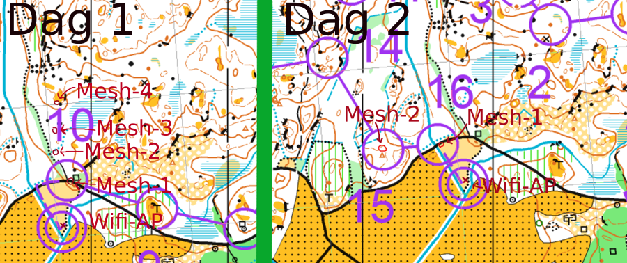
WiRoc med en Mesh-Wifi-dongle:
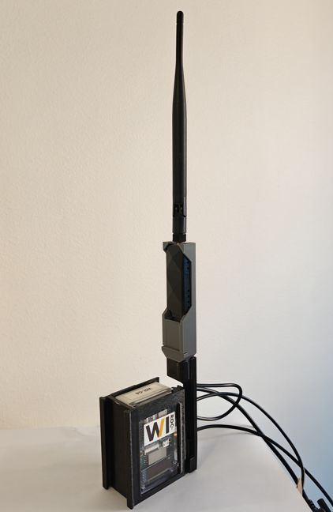
Wifi-mesh
2026-01-22
Har gjort tester med Wifi mesh, 802.11s, på WiRoc enheterna. Drivrutinerna för den inbyggda wifin stöder inte mesh men det går att köpa billiga USB-wifi baserade på Atheros AR9271. Till dessa finns det bra Linux drivrutiner. Lyckades inte få WPA kryptering att fungera tillförlitligt men som ett okrypterat öppet nätverk fungerade det bra. För att få det stabilt behövde jag dock 3D-printa hållare för att undvika glapp i USB-kontakten. Jag tänker att detta skulle kunna vara ett alternativ för exempelvis sistakontrollen i de fall den ligger strax utanför vanliga wifi rangen. Eller kanske för en publikkontroll. Fördelen är blixtsnabb sändning och att ingen Lora kanal behövs, vilket kan vara en fördel om alla redan används till andra radiokontroller. Meshinställningarna konfigureras i WiRoc Config i en ny flik:
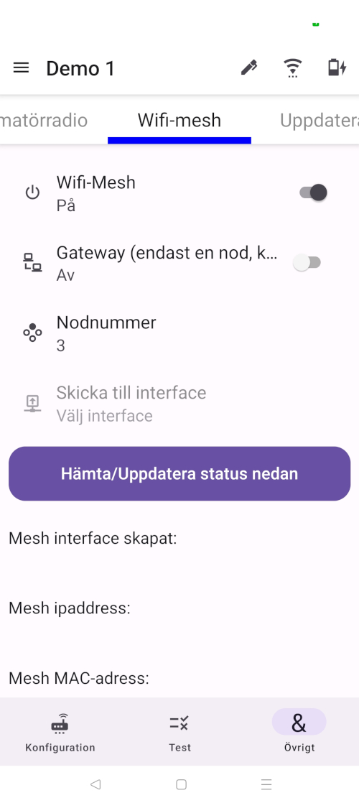
Gick ut och testade med fyra WiRocenheter med varsin USB-Wifi. Den första (1 i bilden) sitter på min balkong och var uppkopplad till internet, tvåan i en snödriva i hörnet lite drygt 100 meter bort, nummer tre också den i en snödriva drygt 100 meter från nummer två. Den fjärde satte jag ~80m bort men den var lite svajig och gick offline ibland. Tror den hade en lite sämre antenn, efter att flyttat den lite närmre nummer tre (ca 50 meter ifrån) så verkade alla enheter hålla sig stabilt online.
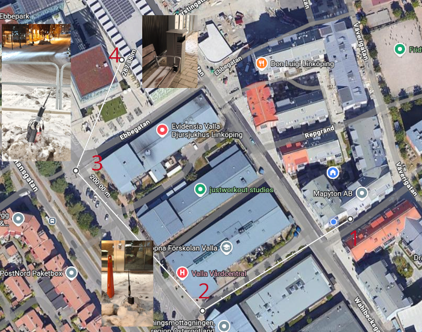
Bättre batterihantering
2025-12-11
Nästa version (V1.04) av mjukvaran innehåller förbättringar av beräkningen av återstående batterikapacitet. Detta ger en mer korrekt beräkning och tittar man på grafen över batterinivån så blir den betydligt mer linjär. Förändringen möjliggör även att använda mer av kapaciteten i batteriet och leder till över två timmar extra batteritid. Batteritiden beror mycket på vad som ansluts till USB-portarna och till viss del hur många stämplingar som ska skickas. Batteritiden bör bli minst 12 timmar och kan utan anslutna USB-enheter bli uppåt 22 timmar.
Förbättringar monitor.wiroc.se
2025-12-10
Sidan med listan på WiRoc-enheter har en ny kolumn som visar batteriladdningen i procent. Det gör det enklare att få en översikt över alla enheter. Tidigare gick det att se samma information om man klickade in på enheten.
Om man klickar in på enheten så kan man se lite mer information. I grafen där batteriladdningen tidigare visades visas nu även antal LoRa meddelanden som inte ackats av mottagaren (Orange linje) under femminutersintervaller. Den röda linjen visar om någon stämpling inte ackats, också det i femminutersintervaller. Notera att en stämpling skickar om flera gånger så man kan ha flera LoRa meddelanden som inte ackats utan att tappa några stämplingar. Siffrorna skickas från sändaren till mottagaren i ett statusmeddelande var femte minut. Statusmeddelandet kan förstås också misslyckas men då kan man se att enheten går offline i listan på enheter. Att övervaka antal icke-ackade meddelanden kan vara ett bra sätt att tidigt upptäcka om någon länk fungerar mindre bra. Kanske kan man då byta antenn eller placering/riktning av antennen. Eller byta till lägre hastighet.
Det finns nu också information om anslutna USB-enheter. Det går att se om det finns SRR-donglar anslutna, vilka kanaler och om de ackar eller inte. Det är viktigt att anslutna SRR-donglar verkligen upptäcks av systemet så att de inte är igång men inte skickar stämplingarna till WiRoc. Med både ROC och WiRoc har vi sett att det kan hända att SRR-dongeln får ström och därför tar emot och ackar SRR-stämplingar, men SRR-dongeln har inte upptäcks av ROC/WiRoc vilket då leder till tappade stämplingar. Om det finns en fungerande SRR-dongel på den andra kanalen så kommer en del stämplingar troligen in den vägen, men om stämplingen skickas från SIAC eller SI-SRR-enhet på den icke fungerande kanalen så får den ack och skickar då inte på den andra kanalen. Så ett tips är att kontrollera här att de donglar som ska vara anslutna är det, och att de har rätt konfiguration (röd eller blå kanal, och ack/no ack).
Även den interna SRR-mottagens konfiguration (för de enheter som har det) visas.
Inbyggd SRR-mottagare
2025-11-01
Sedan version 7 av hårdvaran finns det en inbyggd SRR-mottagare i WiRoc enheten, eller rättare sagt finns det två. En för röd kanal och en för blå kanal. Det går att enabla/disabla dem var för sig och ställa om var för sig om de ska acka eller inte.
O-Ringen Jönköping 2025
2025-09-15
WiRoc användes på O-Ringen för framförallt förvarningarna. På O-Ringen har alla löpare en förvarningskontroll, i de flesta fall är detta näst sista kontrollen på banan. Det är som mest 8 förvarningskontroller men är oftast något färre. Vi hade mellan 4 och 8 förvarningkontroller per etapp i Jönköping.
Förutom förvarningskontrollerna användes WiRoc enheter till att fånga upp touch-free stämplingar vid målet. Detta i kombination med samlingsboxar som tog de vanliga stämplingarna och som också de hade SRR-mottagare för touch-free. Det gjorde även en del tester med WiRoc vid en del av radiokontrollerna.
Förvarningskontrollerna
Förvarningskontroller är ganska perfekt att använda WiRoc för. De ligger normalt så nära att inga större antenner behövs och inte mycket (om ens någon) testning krävs. O-Ringen är ju lite annorlunda dock med upp till 8 förvarningskontroller och många löpare (runt 1,5 per sekund). I nuvarande version av WiRoc så finns det sex kanaler så samma kanal behöver användas på några kontroller. Gjorde flera ganska ordenliga tester innan med att ha flera kontroller som skickade på samma kanal och det skapade inga problem. Särskilt vid sådana här kontroller med hög belastning är det bra om kontrollerna ligger inom räckhåll från varandra så att de kan 'höra' när den andra sänder.
Ett problem upptäcktes under veckan och det var att mottagarna ibland verkade 'hänga' sig. Egentligen hängde de sig inte utan tog bara lång tid på sig att försöka felrätta en del mottagna meddelanden. Mjukvaran har uppdaterats för att begränsa hur mycket tid som felrättningen får ta. Om vi hade förstått problemet bättre hade jag gjort några små ändringar i placeringen av mottagarna. Troligen hade bitfelen kunnat i det närmaste eliminerats genom att placera mottagarna som körde med närliggande kanaler lite längre ifrån varandra.
Målet
Vid målet användes samlingsboxar som var kopplade till SI-enheter med seriekabel och som även hade SRR-mottagare inkopplade. Två av samlingsboxarna hade två SRR-mottagare i varje. Bara två SRR mottagare ackade meddelandena, en på varje kanal. SRR-mottagarna i samlingsboxarna kompletterades med tre WiRoc enheter placerade 2-3 meter efter målenheterna. Dessa var inställda till att inte acka tillbaka. Två av dem använde SportIdents SRR-mottagare men den tredje WiRoc enheten använde egen inbyggd SRR mottagare. Enda problemet vid målet vi hade var någon powerbank till samlingsboxarna som överhettades av att vara i solen och en SI-enhet som slutade fungera.
SRR
SRR överföringen är inte så tillförlitlig, det är lätt att tappa upp till några procent av stämplingarna där. Det verkar som att det ofta händer när någon, ofta löparen själv, står emellan kontrollen (eller egna SI-pinnen om det är touch-free) och mottagaren. Mottagare som sitter vid kontrollen, så att ingen kan blockera, är troligen bästa lösningen men kanske inte så enkel i praktiken. Ett alternativ är att ha flera mottagare, i olika riktningar från kontrollen så att risken att någon blockar båda är liten.
Vid sistakontrollen på E1 och E2 hade vi problemet att mottagaren var satt så att löparen själv ofta blockade signalen. Mottagaren låg nära i avstånd men det tappades ändå flera procent av stämplingarna. Vid E1 och E2 hade vi dock sådan tur att avståndet till mål var så kort att wifit nådde till kontrollen. Med två WiRoc, direkt uppkopplade på wifit så gick antalet tappade stämplingar ner signifikant och slutade under procent på totalen.
Ett annat problem vi stötte på var att Sportidents SRR-mottagaren som kopplas in med USB till t.ex ROC eller WiRoc tappade kontakten med ROC/WiRoc. Detta hände på Bagheera stafetten. SRR-mottagaren är inkopplad och den lyser, och den ackar stämplingarna men ROC eller WiRoc har inte kontakt med den och tar inte emot stämplingar. I ROCs webbgränssnitt kan man se om SRR-mottagaren är inkopplad och upptäckt. Så vi införde en rutin att kontrollera det efter Bagheera. Samma sak hände dock även för WiRoc på elitsprintens förvarning. Jobbar på att införa liknande rapportering av inkopplade enheter så att man kan se detta i WiRocs webbgränssnitt också.
Radio
För alla radiokontrollerna användes Dubbel-rocar. Dock gjordes det tester på en del med WiRoc. På E1 hade vi fyra radiokontroller där de två längst bort låg 3 respektive 3,7 km bort. Här testade vi att köra alla fyra på samma kanal med en lite högre datahastighet. Eftersom det var så långt så hade det inte fungerat att ha mottagaren på arenan utan istället satte vi den på en hög höjd 500-600 meter från arenan. Från mottagaren ner till arenan användes en wifi-länk. Alla stämplingar från kontrollerna ackades av mottagaren, ett fåtal fick skickas om då de inte gick fram (eller ackades) på första försöket. Men det är helt normalt, särskilt i detta fall då kontrollerna låg så långt ifrån varandra att de omöjligt kunde höra när de andra skickade och därför säkert ibland skickade samtidigt. Detta var första riktiga försöket med så många sändare på samma kanal och så hög belastning. Total succé!
På E3 hade vi två radiokontroller, den ena på en höjd medan den andra låg lågt bakom höjder. Även målet låg lågt. Ett svårt läge för radiokontakt. Möjligt att det skulle fungerat med riktantenner ändå, men det var ett bra tillfälle att testa att skicka via en mellanpunkt. Så vi gjorde så att radiokontrollen som låg lågt skickade till en mottagare som låg vid radiokontrollen som låg på höjden. Denna mottagaren kopplades till en WiRoc-sändare via seriekabel. Sändaren tog även in stämplingar med SRR-dongeln från kontrollen på höjden.
Tyvärr har jag inte loggarna kvar men vi kunde se under dagen att det kom in stämplingar från båda kontrollerna. Vi såg också att de kom in något sent. Antingen berodde det på att det var för många stämplingar för den hastighet vi valt, och/eller så blev det en del bitfel som gjorde att meddelanden fick skickas om och att det därför blev kö. Men funktionen att skicka vidare via en mellanpunkt fungerade!
På E4 ville jag testa lite längre avstånd och amtörradioläget... Här satte vi en mottagare med stor riktantenn på höjden bakom arenan. Denna var inkopplad på nätverket med kabel. Radion längst bort hade också en stor riktantenn. Använde "Long range" inställningen så något långsammare hastighet jämfört med förvarningarna. Testade här nya amatörradioläget, det är lite andra frekvenser och kräver att radioamatörens anropssignalen skickas regelbundet. Första riktiga testet av detta läge.
Alla stämplingar ackades och vid de stickprov jag tog så var det ingen kö på stämplingar att skicka utan de kom in i Ola i realtid (tar ca 2 s att skicka). Det gjorde inte en enda omsändning, allt kom fram på första försöket. Ett meddelande kom fram med bitfel men det rättades i mottagaren. Avstånd från kontrollen till mottagaren var nästan exakt 4 km.
Uthyrning
2023-09-06
I fliken Produkter finns nu listat vilka produkter som finns tillgängliga för uthyrning. Om du är intresserad skicka ett mail till info (at) wiroc.se eller henrik.larsson (at) chenfei.se för mer information. Om du skickar en karta med tänkta radiokontroller gör jag en bedömning om vilken utrustning som är lämplig och vad som är möjligt.
SportIdent SRR
2022-06-05
Fick nyligen hem en SportIdent SRR enhet och en USB SRR-Dongle för test och nu finns stöd implementerat för dessa i v0.237. Även i tidigare versioner så fungerar det, men då behöver man klicka i att USB anslutningarna ska vara one-way* manuellt. I v0.237 detecteras att det är en SRR-Dongle och då sätts denna till one-way. Om man har en vanlig SportIdent med USB sladd i andra USB ingången så behöver inte den då inte vara one-way (den manuella inställningen påverkar båda USB ingångarna).
Det vore intressant att i framtiden inkludera SRR mottagare inbyggt i WiRoc. Det verkar som SportIdent helt slutat sälja enheter med USB och med Seriell sladd. Det enda de verkar ha kvar är en enhet med USB men utan inbyggt batteri. Denna är endast lämplig för avläsning och kan inte användas för radiokontroller.
* När inställningen One-way är vald så lyssnar WiRoc efter meddelanden men skickar inga kommandon eller frågor till enheten. När den inte är one-way så kan missade stämplingar läsas från backup minnet i enheten. Missade stämplingar kan hända om t.ex USB sladden glappar eller tillfälligt kopplas ur.
Radiostörningar
2022-06-03
Vi använde WiRoc på två tävlingar utanför Forsheda för några veckor sedan. På lördagen var det utbrutet mål så vi använde WiRoc för att skicka målstämplingarna. Avståndet var ca 1400m och målet låg i princip på högsta punkten på en höjd utan några andra höjder mellan TC och målet. Som förberedelse testade jag att skicka stämplingar och använde då dipole antenner på både sändaren och mottagaren. Det verkade vara lite på gränsen, de allra flesta sändningar gick fram men några gjorde inte det. Eftersom det görs omförsök och eftersom jag normalt brukar använda riktantenn på mottagaren så var slutsatsen att det inte skulle vara några problem alls. Så på tävlingsdagen monterade vi upp riktantenn på mottagaren och dipole på sändaren. Men till vår förvåning så fungerade det inte bättre utan det verkade fungera sämre.
Vi satte då upp riktantenn på sändaren, och sänkte datahastigheten. Detta fick det att fungera någorlunda men inte helt bra.
På söndagen hade vi två radiokontroller ca 300-400 meter bort åt andra hållet och dessa fungerade utmärkt. Det kom sedan en önskan från speakern om att sätta radio på den gemensamma sista och varvningskontrollen. Detta ca 50 meter från mottagaren. Det kan ju inte vara något problem... kopplade in den med en något sämre antenn, och sändaren nära marken och den låg lite som i en grop från mottagaren sett, men 50 m kan ju inte var något problem. Och sedan började problemen... många sändingarna hade problem att komma fram, de fick skickas om och det blev kö på stämplingar att skicka.
Så vad orsakade dessa problem? Slutsatsen vi kommit fram till, både genom egna tester senare och genom att prata med andra är att kraftledningen som gick nära TC skapade radiostörningar. Det var ca 90 meter från mottagaren till kraftledningen och ca 50 m från sista/varvningkontrollen till kraftledningen. Även lördagens mål låg i riktning mot kraftledningen från TC sett, riktantennen var i princip riktad rakt mot ledningarna.
I veckorna efter tävlingen har jag analyserat loggarna från WiRoc noggrant för att förbättra möjligheten att sända och ta emot meddelanden när det är mycket radiostörningar. När ett meddelande blir korrupt pga av radiostörningar så kan en av två saker hända. Antingen så klarar sig headern (Loraprotokollets standard header) som innehåller bland annat meddelandets längd och felen uppstår endast i data delen av meddelandet eller så upptäcks fel i headern också. Headern använder sig av högre felkorrigeringskoden Hamming code 4/8 (4 databits, 4 felkorrigeringsbitar) medan data delen normalt använder sig av Hamming code 4/5 (4 databits, 1 felkorrigeringsbitar). Om headern är korrupt så kan inget meddelande tas emot. Om felen endast finns i data delen så får man meddelandet ändå men får också notifiering om att det troligen är felaktigt. Det man då kan göra är att implementera en felkorrigerings metod och skicka med extra felkorrigeringsdata.
Redan innan tävlingen har jag implementerat Reed-Solomon kodning för stämplingsmeddelanden och detta rättade en del av meddelandena. Nu fick jag dock många testmeddelanden och kunde vidareutveckla felkorrigeringen. Dels så vet man ju en del om strukturen på meddelandena, och även troliga värden på delar av det. T.ex så kan man vara ganska säker på att de kommer från samma kontroll som förra meddelandena, man vet ungefärlig tid etc. Hittade även en metod för att kunna rätta ännu fler fel: https://arxiv.org/pdf/2107.08868.pdf
Det blir säkert lite småjusteringar i koden men i stort så går det nog inte förbättra felkorrigeringen så mycket mer. Vid tester så märker jag en ganska stor skillnad just när jag testar från ett ställe nära en transformatorstation där det tidigare var närmast omöjligt att få fram något meddelande. Nu går de flesta meddelanden fram där.
Märker man att det är problem så finns det även en inställning för att öka Lora inbyggda felkorrigering av datat från Hamming code 4/5 till något högre (exempelvis 4/8). Det kommer då ta längre tid att skicka meddelandena men borde kunna hjälpa en hel del just när det ligger på gränsen.
Fler mjukvaruförbättringar
2021-10-09
Med bytet till en ny radiomodul så infördes två nya radio modes "XL" eXtra long range och "UL" ultra long range. Dessa lägen innebär betydligt långsammare överföring. Vid tester har det fungerat bra att skicka över långa avstånd men det har blivit ganska tydligt att det inte får vara många stämplingar per minut för att det ska fungera. Särskilt om det krävs omsändningar så blir det snabbt en kö av stämplingar att skicka.
Radiomodulen har inbyggd felkorrigering, i vissa fall så kan radiomodulen upptäcka att öveföringsfel uppstått utan att kunna rätta det. I dessa fall får man ändå det överförda (felaktiga) meddelande samt information om att den är fel. Det här öppnar för att implementera felkorrigering på meddelandenivå för att försöka korrigera även dessa meddelanden.
Ovanstående har fått mig att börja implementera följande::
- Felkorrigering med Reed-Solomon algoritmen
- Nytt meddelande format för stämplingar som nästan halverar antalet bytes som behöver skickas
- Ny meddelandetyp som skickar två stämplingar i ett meddelande
Förhoppningen är att fler meddelanden ska kunna korrigeras och därmed kräva färre omsändningar. Detta är förstås särskilt viktig när det är dålig mottagning och/eller man använder lägena för lång räckvidd/låg hastighet.
Att korta ner meddelandena gör att lägena för lång räckvidd/låg hastighet blir möjliga att använda i betydligt fler fall. Även den nya meddelandetypen hjälper till att öka överföringskapaciteten, dock ger den störst skillnad vid lägena för hög hastighet där fördröjningar som inte har med datahastigheten att göra är mer dominerande.
Vid O-Ringen i Östergötland funderade jag på möjligheten att använda WiRoc på sistakontrollen. När det var som högst tryck så stämplade ungefär 75 personer per minut på sistakontrollen (1.25 per sekund). Tidigare har WiRoc kunnat skicka ungefär 1 stämpling per sekund med läget för högsta hastigheten och med acknowledgements, alltså något för långsamt för en egen WiRoc att hantera. Med den nya meddelandetypen och kortare meddelandelängd visar mina preliminära tester att det går att skicka 2 stämplingar per sekund.
Ny version
2020-05-23

Av flera anledningar har jag jobbat på en ny version av WiRoc. Den enkortdator (C.H.I.P.) som version 2 bygger på går inte längre att få tag på. Den nya enkortdatorn som jag har valt gör att det blir möjligt att göra ett antal förbättringar. Samtidigt saknar den en del funktioner (power management, batteriladdning) som jag har fått lägga till på ett eget kretskort. Jag passar samtidigt på att byta till en ny radiomodul som klarar av kanaler med mindre bandbredd, dvs ger möjlighet till fler icke överlappande kanaler.
På O-Ringen identifierades flera möjliga förbättringar, som skulle göra WiRoc smidigare att använda eller göra att Wiroc kan användas i fler situationer. Bland annat hade det varit smidigt att kunna ansluta fler SportIdent-masterstationer till en WiRoc utan att behöva en USB-hub. Nya versionen har därför två USB-kontakter så att två SportIdent-masterstationer kan anslutas utan USB-hub.
Mjukvaran har också optimerats så att det på högsta hastigheten går att skicka strax över en stämpling per sekund med acknowledgement påslaget. Med envägsradiokommunikation, alltså utan att sändaren begär bekräftelse tillbaka så kan man skicka ca 2 per sekund. Detta gör det möjligt att använda WiRoc på exempelvis sistakontrollen på O-Ringen. I ett sådand scenario så rekommenderar jag, oavsett om man kör med acknowledment eller inte, att använda två WiRoc enheter och att koppla SI-enheterna så att ungefär hälften av stämplingarna går till vardera WiRoc. SI-enheterna kan antingen kopplas via USB-hub eller via samlingsboxar och USB-seriell adapter till WiRoc enheterna.
Den mindre storleken hoppas jag gör det enklare att hitta någon lämplig väska för förvaring.
Förbättringar:
- 6 icke överlappande kanaler
- I version 2 finns det 8 kanaler men de överlappar i frekvens. För att undvika överlappning var man tvungen att använda kanal 1 och kanal 7 eller kanal 8. I praktiken alltså två kanaler utan störningar mellan dem.
- 2 USB kontakter
- Nya versionen har två USB-kontakter för att ansluta SportIdent-masterenheter till. (Plus förstås USB kontakten för laddning precis som innan.)
- Wifi antenn
- En riktigt wifi antenn ersätter kretskortsantennen på förra versionen så att det går att placera mottageren längre ifrån WLAN/Wifi accesspunkten/routern.
- Mindre till storleken
- Den nya boxen är 84*59*34 mm.
- Mjukvaruförbättringar
- Stöd för USB-Seriell adaptrar med "067b:2303 Prolific Technology, Inc. PL2303 Serial Port" chipset
- Stöd för USB-Seriell adaptrar med "0403:6001 Future Technology Devices International, Ltd FT232 USB-Serial (UART) IC" chipset
- Stöd för USB-Seriell adaptrar med "0557:2008 ATEN International Co., Ltd UC-232A Serial Port [pl2303]" chipset
- Snabbare sändning av stämplingar efter varandra. Klarar ca 1,2 stämplingar per sekund nu med "request acknowledment" valt och 2 per sekund utan.
- Möjlighet att sätta one-way kommunikation med SI-masterenheter för att förhindra att WiRoc att skicka kommandon till SI-masterenheten.
- Möjlighet att sätta 9600bps baudrate vid kommunikation med SI-masterenhet. (Detta tillsammans med one-way gör det möjligt att ansluta en samlingsbox via USB-serielladapter)
O-Ringen Kolmården 2019
Som ansvarig för onlinekontroller hade jag hand om främst tre kategorier av onlinekontroller, onlinekontroller i skogen, start/check enheter som var online samt sistakontrollen och målstämplingen.
Start/Check enheter
Här användes ROCar med USB-sticka som kopplade upp på Telias mobilnät. Varje startplats hade en eller två ROCar som skickar stämplingar i check-enheten alternativt start-enheten (beroende på startmetod). Detta gör att man tidigt vet vilka som har startat och sportidentenheterna behöver inte läsas av efter tävlingen. Förutom ROCen och USB-stickan behövs en powerbank och lite USB-kablar. I det vi fick från föregående år fanns det en USB-kabel för strömmatning (USB-A till Micro USB). Eftersom det är på gränsen att det går att strömmata ROCen genom bara micro-usb kontakten så rekomenderas att man även strömmatar "baklänges" till ROCens USB-A kontakter. För detta fanns det även en Y-kabel som har två USB-A hane kontakter och en USB-hona. Tanken med den är att man kopplar den från powerbanken till de vanliga USB-A kontakter och att den kvarvarande USB-A hona kontakten i Y-kabeln kan användas för t.ex mobil USB-stickan.
Vi började testa ROC-arna för start/check enheter tidigt, dels för att testa hur länga batterierna räcker (kanske behöver vi byta någon powerbank) och testa om allt fungerar. Tur var det, vi hade direkt problem med att ibland så kopplade de inte upp sig på mobilnätet, eller att de kopplade upp sig en stund men sedan kopplade ner för att senare koppla upp sig igen. Det verkade vara mer eller mindre slumpmässigt vilken/vilka som krånglade. Vi testade olika batteripaket och strömförsörjningar och mätte om spänning var låg/ostadig. Samma problem uppstod på både i Linköping och i Norrköping så hade troligen inte med täckning eller mobilnätet att göra. Efter mycket testande så visade det sig att det var Y-kabeln som orsakade problemet, hur vet vi inte. Vi köpte in vanliga korta 30 cm USB-förlängningskablar istället, detta så att USB-stickan kom ut från ROCen lite så den inte blockar USB-kontakterna jämte. Eftersom vi inte längre använde Y-kabeln (eller använde den bara för strömmatning) så förlorade vi en USB-kontakt på ROCen men vi behövde bara två USB-kontakter för att koppla in SportIdent enheter på ändå.
Nu när det problemet var löst upptäckte vi att ett av Telias kontantkort hade fått slut på data. Misstanken där var att det antingen var något i ROCens operativsystem som slukade datatrafik (säkerhetsuppdateringar?) eller att ROCen själv konstant försökte skicka eller ta emot data. Felsökningen där gjorde vi genom att koppla in ROCen via ethernet kabel till en dator. Datorn var uppkopplad till Wifi och internet delades från Wifit till ethernetkabeln. På detta sätt passerade nätverkstrafiken datorn och med programmet Wireshark kunde vi se nätverkstrafiken. Det visade sig att ROCen skickade anrop mot ROC-servern där den försökte skicka upp samma stämpling gång efter gång. ROC-servern skickade tillbaka ett felmeddelande om att querysträngen var för lång. Vi tog kontakt med Oskar Berg som löste problemet genom att ändra inställningarna på servern.
Nu borde väl allt ändå fungera? Det tog inte lång tid innan nästa Telia kontantkort tog slut på en annan ROC. Samma övning igen med felsökning. Denna gång visade sig problemet vara att ROCen försökte skicka upp samma stämpling två gånger i samma anrop. Detta gillade inte servern. Efter ny kontakt med Oskar Berg så lyckades han återskapa felet. Felet var i ROC-mjukvaran och kunde uppstå om man drar ur en SportIdent-enhet och sätter i den igen inom 10 sekunder. Vi valde då att bränna om ROC-imagen och sedan instruera startpersonalen att vänta minst 10 sekunder efter att de dragit ur en SportIdent-enhet innan de sätter i den igen. Oskar har säkert löst problemet i senare versioner.
Startcheferna fick instruktioener om hur de skulle hantera ROCarna och fick dem i början på veckan och behöll dem sedan hela veckan. De fick själva se till att ladda powerbanken varje natt. På morgonen efter att de startat upp dem så fick de ringa in till oss och stämpla i start/check-enheten så att vi kunde kontrollera att de var online och att stämplingar kom in. På eftermiddagen innan de kopplade ner så fick de ringa igen och stämpla i start/check-enheterna för bekräfta att alla stämplingar hade laddats upp till servern.
Under veckan så hade vi en powerbank som inte hade blivit laddad en dag och en USB-sticka som vi fick byta. Det hände några gånger att en ROC tappade kontakten med mobilnätet och vi fick ringa och be dem starta om den. De flesta gånger som de gick ner så kom de tillbaka innan vi hann ringa dem. Vi hade lite dålig mobiltäckning på ett par ställen, där fick de montera dem lite högre upp. Sammanfattningsvis mycket krångel under föreberedelserna men under veckan fungerade det bra.
Skogskontroller
Till skogskontroller användes främst O-Ringens ROCar som går på NET1 nätet. De består av en ganska stor NET1 router, ett 12-volts motorcykel batteri och en vanlig ROC. Dessa är monterade i en väska av plast (tänk verktygsväska för borrmaskin version större). Tunga och otympliga var de. Erik Wedin som var min chef (chef för stämplingsgruppen) var tidigt ute och testade vid alla tänkta onlinekontroller och noterade ner antal staplar på NET1-routern och RSSI värden för Telia ROCar. Detta var till stor hjälp senare.
Vi testade även dessa NET1-rockar flera gånger under veckorna innan O-Ringen. Vi fick byta ut ett eller två av batterierna och någon av ROCarna eftersom det var glapp i strömkontakten. Vi hade problem med att uppkopplingen mot NET1-nätet inte var stabilt. Vi kontrollerade att vi hade senaste firmwaren för routrarna, testade lite med olika antenner men fick inget tydligt resultat. Efter samtal med NET1 visade det sig att de lagt ner en av masterna i Norrköpingsområdet. Kvar var en mindre centralt i Norrköping och en större norr om Norrköping. Vi hade började nu fundera på att använda riktantenner på de platser med sämre mottagning.
På Söndagen var det dags för Bagherra-stafetten, den gick inne i Norrköping så vi förväntade oss inga problem med täckning men eftersom vi hade haft problem med uppkopplingen till NET1 så hade vi backup-ROCar (NET1 också) med oss ut till kontrollerna. Problemen började direkt med att de tappade uppkopplingen men med hjälp av backupen löstes radio-kontrollen troligen utan att någon märkte något. Förvarningskontrollen däremot, den höll uppkopplingen och rapporterade in att den var online men rapporterade inte in några stämplingar. Eftersom den stod som online så tog det oss ett tag innan vi insåg att det var problem med den. Komunikationen innifrån arenan där vi satt och övervakade med de ute vid kontrollerna var knepig eftersom ljudnivån var hög. Vi misstänker att problmet med förvarningskontrollen var samma som vi hade med en start-ROC, dvs att den försökte skicka dubbla stämplingar i ett anrop. Vi hade dock inte tid att felsöka det utan brände om imagen på SD-kortet så att det fungerade nästa dag.
Efter de här problemen tog vi ett litet krismöte och diskuterade hur vi skulle gå vidare. Får vi så här mycket problem under veckan så skulle det bli jobbigt... Vi hade en del inlånade extra ROCar med USB-modem så ställde iordning så många sådan som möjligt och fixade kontantkort till dem. De fick fungera som backup om NET1-rocarna skulle krångla. Jag hade också själv testat mina WiRoc-enheter och visste vilka kontroller som låg inom räckhåll för dem. Med några få undantag skulle WiRoc gå att använda om man satte upp en WiRoc-repeater. Så mitt i natten innan första ordinarie dag så monterade jag upp en WiRoc-repeater på en höjd. Vi bestämde oss också för att använda riktantenn för NET1 på de ställen med lite sämre täckning. Första "riktiga" dagen blev en total framgång, tror inte vi hade ett enda problem. Inga backuplösningar behövde användas. Med undantag för lite glapp i usbkontakterna så fungerade NET1-rocarna bra även resten av veckan.
Förutom NET-rocarna och några enstaka Telia-rocar så använde vi WiRoc på några kontroller också. Under andra dagen användes det för en MTBO-kontroll nära målområdet. På förmiddagen på aktivitetsdagen användes de för sistakontrollen på MTBO. På elitsprinten valde vi att använda dem på näst sista kontrollen samt på näst sista kontrollen innan varvning. Speakern önskade här att stämplingarna skulle komma in snabbt eftersom kontrollerna låg så nära målet. Med ROC blir det en viss fördröjning som ibland kan vara ganska lång. Att dra tråd var ett alternativ men det skulle ha varit en hel del jobb. Som backup hade vi möjlighet att sätta upp en nätverksradiolänk (nätverksradiolänken användes på etapp 5) och koppla en ROC till den. Vanlig Telia-ROC var backupalternativ också. WiRoc användes även på en kontroll på fjärde etappen. Vi hade inga problem med WiRoc.
Sistakontroll, målkontroller
Sistakontrollen och målkontrollerna kopplades upp med hjälp av tvåtråd och samlingsboxar. Enda undantaget var sistakontrollen för MTBO på aktivitetsdagen där WiRoc användes. Med i O-Ringens matrialsats finns ett antal samlingsboxar som har 6 serieportar där man kan koppla in SportIdent enheter, en utgående serieport som kan kopplas in till en dator eller till nästa samlingsbox. De hade också en in och en utgång för tvåtråd. Antalet samlingsboxar räckte för OL men inte för OL och MTBO. Eftersom MTBO körde en separat OLA databas så behövde vi ha egna samlingsboxar för deras sistakontroll och målkontroll, och förstås dra separata tvåtrådar. Vi lånade in samlingsboxar av lite äldre modell för MTBO som bara klarade av SportIdents legacy protokoll. Det betydde att dessa SportIdent enheter behövde programeras med legacy protokollet, vilket inte senaste SI Config programmet ens tillåter en att göra längre. Vi testade alla samlingsboxar och serieportar. Några serieportar fungerade inte så det tejpade vi över så de inte av misstag skulle användas.
Tvåtråden grävdes ner under veckan innan och samlingsboxarna monterades på målade MDF-skivor tillsammans med batteri. Detta gjorde det enklare/snabbare att sätta upp och koppla upp allt på morgonen. Men det tog ändå lång tid att koppla upp allt, ordna och tejpa kablarna samt testa att det fungerar. Underskatta inte tiden. Om det finns bevakning på arenan så överväg att göra det på kvällen innan/lämna kvar det över natten mellan dagarna. Vi var tre personer inklusive mig och Erik Wedin för att få upp allt på morgonen. Detta inkluderade ta emot samtalen från starterna och från de som satte ut onlinekontrollerna.
Tips/synpunkter/noteringar
Testa allt i ordentligt i förväg för att hitta det som är sönder och det som glappar eller de saker som är felkonfigurerat.
O-Ringens NET1 ROCar var stora/tunga och därför jobbiga att transportera. En kortare sträcka kan man kånka dem men för lite längre behövs bil. Alternativt om man har en lite större ryggsäck så kan man cykla med en. NET1 rocarna använder sig av cigarettuttag och adapter för att gå från batteriets 12v till USB. Vissa av dessa var av dålig kvalite och de hade en förmåga att glappa. Detta borde göras om. I övrigt så fungerade de bra om bara NET1 täckningen är hyffsad.
Vårt jobb hade varit enklare om både OL och MTBO hade använt samma OLA databas. Eftersom det var olika behövde vi ha två ROC-tävlingar och tilldela alla ROCar antingen till MTBO eller OL. Hade det varit samma tävling hade det varit lättare att flytta dem mellan dem. Det betydde också att vi behövde fyra datorer istället för två för att ta emot onlinestämplingar. Samt separata trådar fick dras till sistakontrollerna.
WiRoc
WiRoc fungerade utmärkt där vi valde att använda dem. Flera möjliga förbättringar för att utöka dess användningsområde identifierades dock. Ett av de mest begränsande sakerna med den WiRoc version som användes på O-Ringen är att den bara hade två icke överlappande frekvenskanaler. Det går att koppla upp flera kontroller även om man använder överlappande kanaler men det har sina begränsningar.
Det skulle vara väldigt smidigt att använda WiRoc för sistakontrollen och därmed slippa gräva ner tråd. För att kunna använda det för sistakontrollen så behöver det gå att skicka 2 stämplingar per sekund (som mest kommer ca 1,5 person imål per sekund). Det behövs lite optimeringar för att klara det, nuvarande version klarar knappt en stämpling per sekund. För målstämplingen borde det fungera bra med WiRoc genom att koppla upp dem på Wifi.
Nuvarande WiRoc version har en USB-kontakt för att ansluta SportIdent-enheter till. På O-Ringen är det nästan alltid två SportIdent-enheter på onlinekontrollerna, man behöver då använda en USB-hub. En förbättring vore att erbjuda fler USB-kontakter så USB-hub inte behöver användas. Då tar man också bort en möjlig felkälla. Stöd för USB-seriella adaptrar eller till och med en serieport skulle göra det möjigt att använda SportIdent-enheter med serieport.